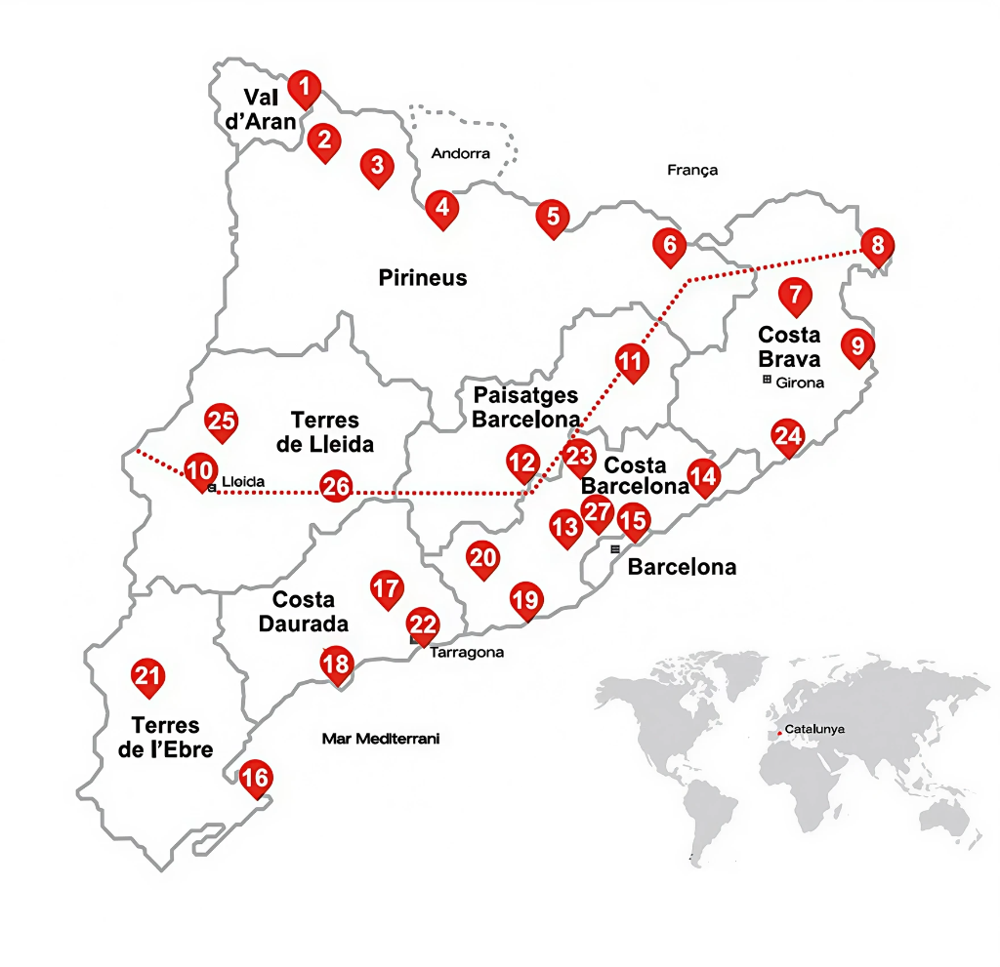

Ruta
Benvingut a la Ruta MMC, un viatge a cel obert pel cor creatiu de Catalunya.
Descobreix els murals més emblemàtics i les obres d'art urbà que transformen les ciutats en galeries a l'aire lliure.
Cada punt assenyalat és una parada obligatòria, una obra mestra que t'espera. Fes servir aquesta guia per planificar el teu recorregut, descobrir artistes locals i internacionals, i veure com els nostres carrers s'han convertit en un autèntic museu.

Punts Clau
Penelles (Lleida)
Conegut com el poble dels murals i un referent de l'street art a Catalunya.
Artistes: Lily Brick, Matías Mata, Rulo López.
La Bisbal del Penedès (Tarragona)
La Bisbal va ser el primer municipi que va acollir el Grafftech Fest, un festival que combina l'art urbà amb la tecnologia per decorar les façanes.
Artistes: Lalone, Mateo Lara Jiménez, Christian Sasa.
Monistrol de Calders (Barcelona)
Aquest poble compta amb diversos murals fruit del Festival d´Art Urbà Murs Murs, que l´ha transformat en una galeria d´art a l´aire lliure.
Artistes: Mario López Fernández, Xavi el Petit, Fabian Zolar.
El Priorat (Tarragona)
Aquesta comarca no té una única ruta, però diversos dels seus pobles exhibeixen murals en les seves façanes i carrers, decorats per artistes locals i visitants.
Artistes: Marina Capdevila, Pep Walls, Carles Arola.